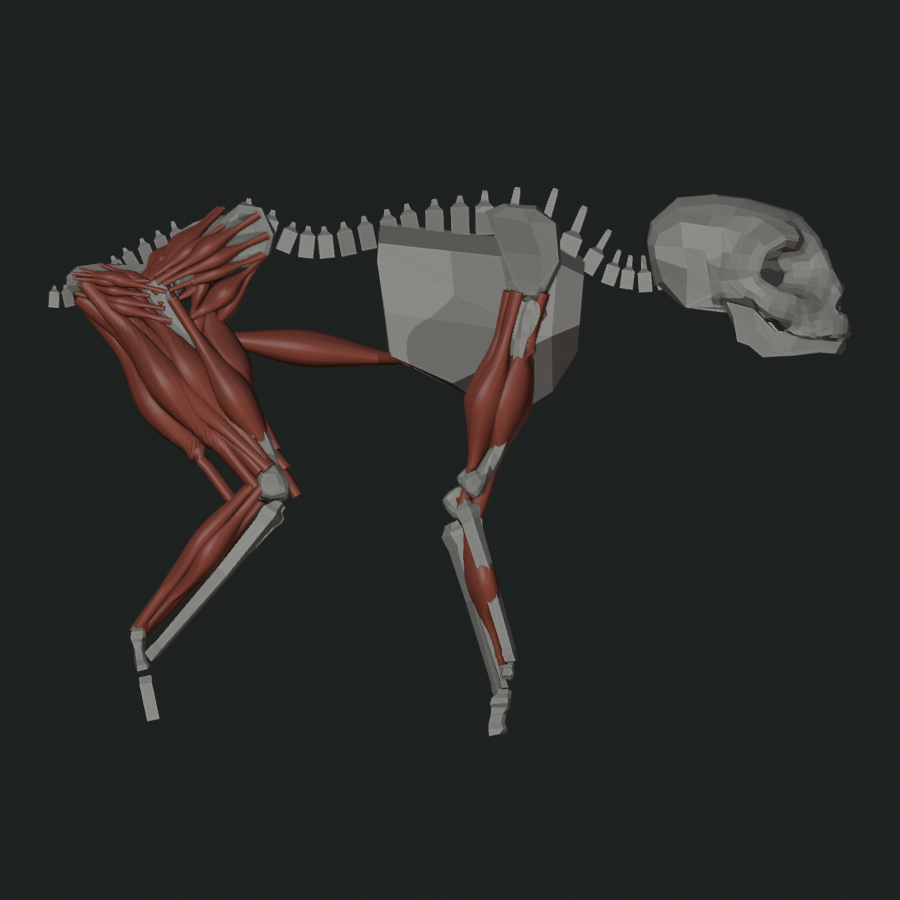
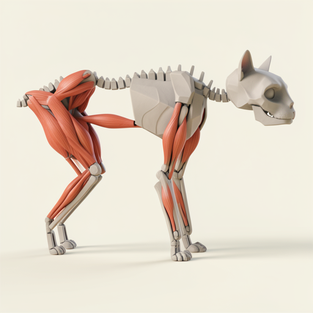
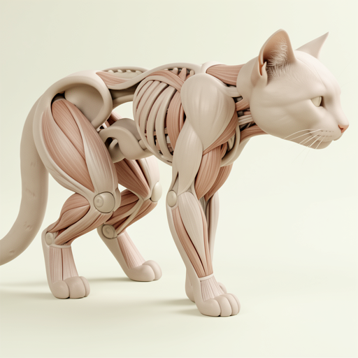
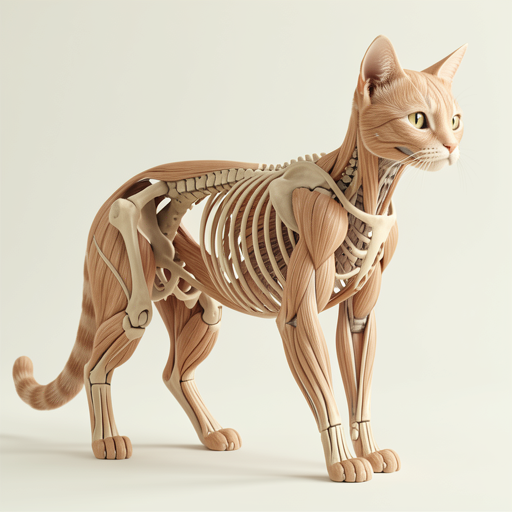
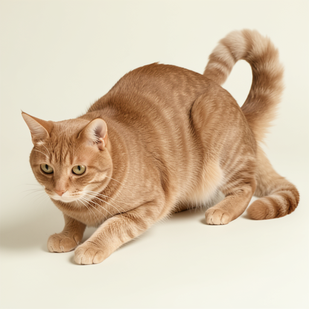
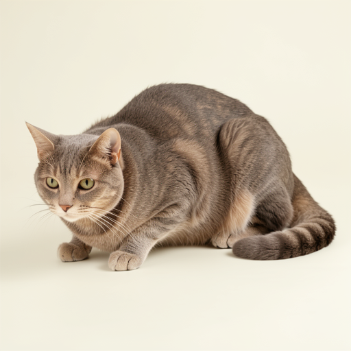

Input: Exposed Ecorche

- Input SHA
- 43e7f5038c6a3f56f7da4e9741336636dc75ce54c276a58622eab17384b8896f
- Variable
- Bone-gray and muscle-red source geometry
Source representation controls morphology; the frozen prompt independently controls the exposed-anatomy surface category.
All rows use the same prompt, seed, model, route, quantization, guidance, steps, and resolution. Only the supplied image changes.

Complete the supplied operator-authored anatomy into one coherent living cat. Preserve the visible proportions, joint locations and organization, pelvis and folded hind-limb event, long muscle trajectories, rear support spacing, axial organization, support count, and direction of travel. Add only the missing connective anatomy and continuous outer surface needed to make the existing structure biologically complete. Do not normalize or replace the source's major mass relationships, limb lengths, joint chain, or stance. Three-quarter neutral studio creature render on a clean pale background. Keep the body continuous and clean, with no exposed anatomy, wounds, clustered apertures, repeated holes, extra limbs, duplicate body, text, interface, or logo.

FLUX stays close to the incomplete source organization and preserves its exposed bone and muscle roles.

Complete the supplied operator-authored anatomy into one coherent living cat. Preserve the visible proportions, joint locations and organization, pelvis and folded hind-limb event, long muscle trajectories, rear support spacing, axial organization, support count, and direction of travel. Add only the missing connective anatomy and continuous outer surface needed to make the existing structure biologically complete. Do not normalize or replace the source's major mass relationships, limb lengths, joint chain, or stance. Three-quarter neutral studio creature render on a clean pale background. Keep the body continuous and clean, with no exposed anatomy, wounds, clustered apertures, repeated holes, extra limbs, duplicate body, text, interface, or logo.

FLUX reconstructs much more complete cat anatomy while retaining the folded hind limb, low front, long support chains, and broad source mass relationships. The surface category remains exposed anatomy.
Complete the supplied operator-authored anatomy into one coherent living cat. Preserve the visible proportions, joint locations and organization, pelvis and folded hind-limb event, long muscle trajectories, rear support spacing, axial organization, support count, and direction of travel. Add only the missing connective anatomy and continuous outer surface needed to make the existing structure biologically complete. Do not normalize or replace the source's major mass relationships, limb lengths, joint chain, or stance. Three-quarter neutral studio creature render on a clean pale background. Keep the body continuous and clean, with no exposed anatomy, wounds, clustered apertures, repeated holes, extra limbs, duplicate body, text, interface, or logo.

The prompt alone produces a generic upright feline ecorche. Exposed anatomy is therefore not evidence of source literalism in this frozen comparison.
Removing anatomy language switches the surface category to fur while source conditioning continues to control low-frequency form.
Use the supplied silhouette and proportions as the exact shape guide for one coherent living domestic cat. Keep its low front, folded rear stance, body length, limb spacing, support placement, and direction unchanged. Render a complete continuous fur-covered exterior with natural paws, face, ears, and tail in a neutral three-quarter studio view on a clean pale background. Preserve the source's unusual mass relationships instead of replacing them with a generic cat pose. No cutaway, exposed interior, diagram, text, interface, or logo.

The same envelope now becomes a continuous fur-covered cat. Rear-heavy mass, crouch, front reach, and a distinct tail event survive, but head-tail polarity reverses.
Use the supplied silhouette and proportions as the exact shape guide for one coherent living domestic cat. Keep its low front, folded rear stance, body length, limb spacing, support placement, and direction unchanged. Render a complete continuous fur-covered exterior with natural paws, face, ears, and tail in a neutral three-quarter studio view on a clean pale background. Preserve the source's unusual mass relationships instead of replacing them with a generic cat pose. No cutaway, exposed interior, diagram, text, interface, or logo.

The exterior prompt alone produces a generic crouched cat. The conditioned output remains visibly distinct, so its unusual low-frequency form is not prompt-only.